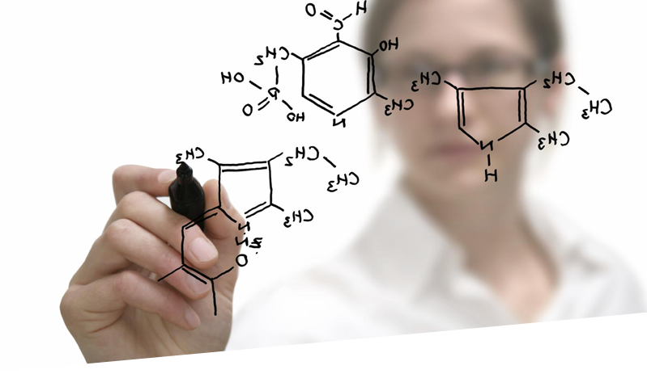

Denumiri colective pentru grupe de elemente înrudite este nomenclatura utilizată de IUPAC pentru categorizarea elementelor chimice.
Denumirile următoare sunt recomandate de IUPAC:
Grupa este coloana verticală din tabelul periodic. Grupele sunt considerate cea mai comună cale de a clasifica elementele. În unele grupe, elementele au unele proprietăți similare sau chiar identice - acestor grupe le sunt date nume care se folosesc destul de des, ex. metale alcaline, metale alcalino-pământoase, metale tranziționale etc.
O perioadă este un rând orizontal din tabelul periodic. Deși grupele sunt cel mai comun mod de a grupa elementele, există regiuni ale sistemului periodic unde similaritățile orizontale sunt mai semnificante decât cele verticale. De ex. metalele tranziționale, și în special lantanidele și actinidele. Numărul perioadei arată și numărul straturilor ocupate cu electroni.
A auctor mauris scelerisque eu proin nec urna quis justo adipiscing auctor ut auctor feugiat fermentum quisque eget pharetra, felis et venenatis aliquam, nulla nisi lobortis elit, acnterdum ante feugiat vitae.
În grupa a 17-a, cunoscută drept grupa de halogeni, elementelor nu le lipsește decât un electron pentru a avea toate straturile ocupate. Din acestă cauză, în reacțiile chimice ele tind să împrumute un electron (tendința de a împrumuta electroni se numește eletronegativitate). Această proprietate este cea mai evidentă la Fluor (cel mai electronegativ element din tot tabelul). Ca rezultat, halogenii formeaza acizi cu hidrogenul, de ex. acidul florhidric, acidul clorhidric, acidul bromhidric, acidul iodhidric, toate în forma HX. Aciditatea lor crește cu numărul perioadei.
Știind grupa și perioada unui element, îi putem stabili configurația electronică și numărul atomic. De exemplu să luăm elemetul situat în perioada a 3-a, grupa VII A (a 17-a). Știm că elementul are 3 straturi ocupate cu electroni și că pe ultimul strat are 7 electroni, deci configuratia va fi: K:2e- L:8e- M:7e-. Având configurația electronică , putem afla numărul atomic adunând toți electronii, deci numărul atomic va fi 17. Având numărul atomic putem afla numele elementului, în acest exemplu: Clor. Din configurația electronică putem afla ce ioni formează elementul. Acceptând un electron, elementul formeaza 1 ion negativ, deci este un halogen. Pe baza ionului format îi putem stabili valența (1) și electrovalența(-1).
Elementele din grupa VIII A, cea de-a 18-a, mai sunt numite și "gaze inerte".
Istoria tabelului periodic reflectă cel puțin un secol de progres în înțelegerea proprietăților chimice și culminează cu publicarea primului tabel periodic actual de către Dimitri Mendeleev în anul 1869. Cu toate că Mendeleev s-a bazat pe descoperirile timpurii ale unor savanți ca Antoine-Laurent de Lavoisier și Stanislao Cannizzaro, savantul rus a adus, la modul general, doar un mic aport dezvoltării tabelului periodic actual.
Tabelul însuși este o reprezentare vizuală a legii periodicității, care afirmă că unele proprietăți ale elementelor chimice se repetă periodic atunci când acestea sunt aranjate după număr atomic. Pentru a afișa aceste trăsături comune, tabelul dispune elementele în coloane verticale (numite grupe și în rânduri orizontale (numite perioade).
Oamenii au știut despre câteva elemente chimice ca aurul, argintul și cuprul din Antichitate, deoarece acestea pot fi găsite în natură în stare nativă și sunt relativ simplu de extras cu unelte primitive. Totuși, conceptul că există în lume un număr limitat de elemente din care este compus totul a fost propus prima dată de către filozoful grec Aristotel. În jurul anului 330 î.Hr., Aristotel a sugerat că totul este făcut dintr-un amestec de una sau mai multe din cele patru "rădăcini" (idee propusă prima oară de filozoful sicilian Empedocles), dar a redenumit mai târziu elementele după Platon.
Cele patru elemente a fost pământul, apa, aerul și focul. În timp ce conceptul unui element a fost astfel introdus, ideile lui Aristotel și ale lui Platon nu au ajutat la avansarea în înțelegere a naturii materiei.
Hennig Brand a fost prima persoană consemnată pentru descoperirea unui nou element. Brand a fost un comerciant german falit care a încercat să descopere Piatra filozofală — un obiect mitic despre care se credea că poate transforma metalele ieftine de bază în aur. El a experimentat prin distilarea urinei de om până în 1649 [3] când a obținut o substanță albă luminoasă pe care a denumit-o fosfor. Acesta și-a păstrat descoperirea secretă până în 1680 când Robert Boyle a redescoperit substanța și a publicat rezultatele. Aceasta și alte descoperiri au ridicat ridicat semne de întrebare asupra ceea ce înseamnă pentru o substanță a fi un "element"
În 1661, Boyle a definit un element ca fiind o substanță care nu poate fi descompusă în substanțe mai simple prin intermediul unei reacții chimice. Această definiție simplă a fost utilă, de fapt, aproape 300 ani (până în momentul dezvoltării noțiunii de particulă subatomică), fiind însă chiar și azi predată în timpul orelor de chimie introductivă.
Lucrarea lui Lavoisier, Traité Élémentaire de Chimie (Tratat Elementar de Chimie, 1789, tradusă în engleză de Robert Kerr) este considerată a fi primul manual modern de chimie. El conținea o listă de elemente, sau substanțe care nu pot fi dezbinate în unele mai simple, printre care oxigenul, azotul, hidrogenul, fosforul, mercurul, zincul și sulful.
De asemenea, acesta reprezintă baza listei moderne a elementelor. Totuși, lista lui mai includea și lumina și căldura, pe care le-a crezut a fi substanțe materiale. Deși mulți chimiști iluștri ai timpului au refuzat să creadă noile revelații ale lui Lavoisier, Tratatul Elementar a fost scris destul de bine pentru a convinge generația tânără. Totuși, deși descrierile lui Lavoisier au clasificat elementele doar ca metale sau nemetale, acestea erau departe de o analiză completă.
În 1817, Johann Wolfgang Döbereiner a început formularea uneia dintre cele mai timpurii încercări de clasificare a elementelor. În 1828, el și-a dat seama că unele elemente formează grupe cu proprietăți asociate. El a denumit aceste grupe "triade". Unele dintre triadele clasificate de Döbereiner sunt:
În toate triadele, masa atomică a celui de al doilea element era aproape exact la fel numeric cu media greutăților atomice a primului și al celui de al treilea element.